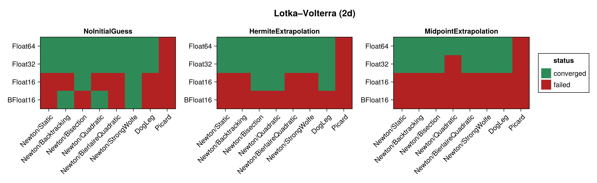
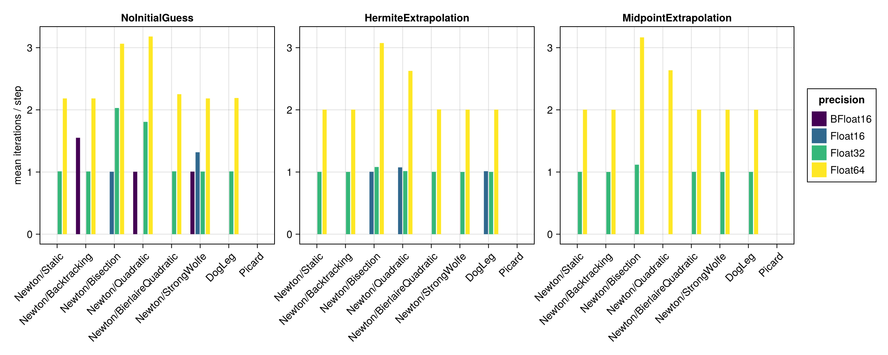
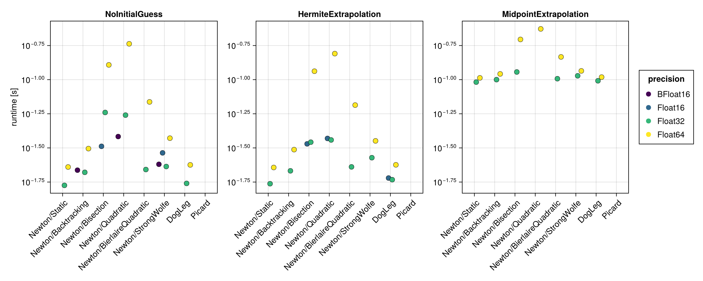
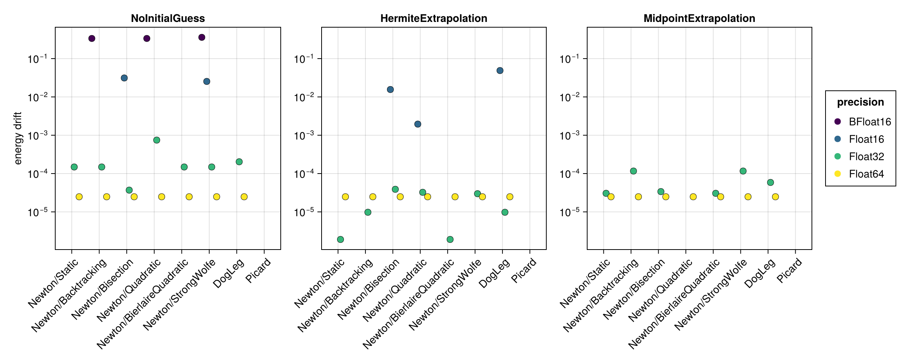
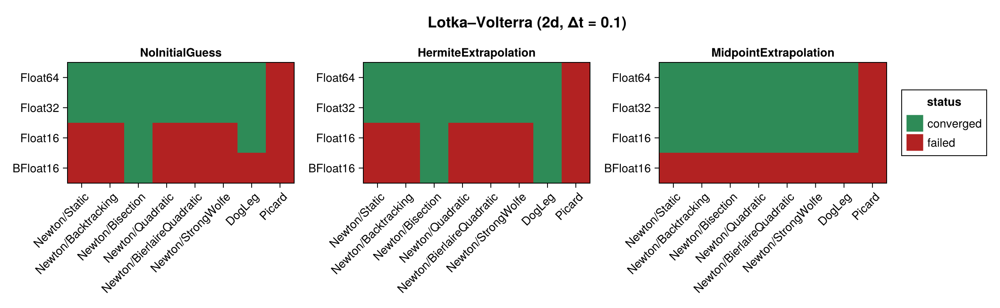
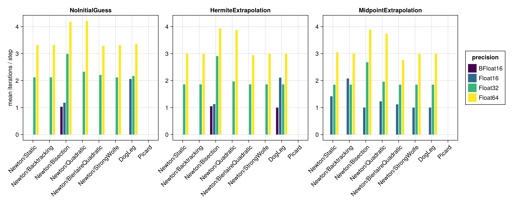
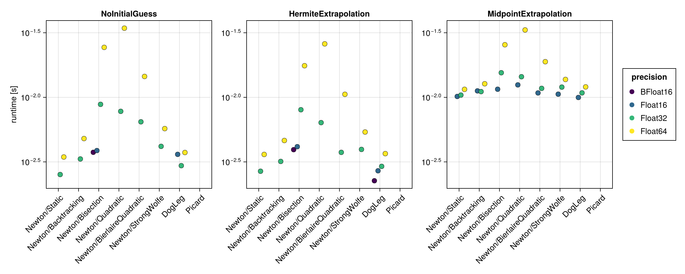
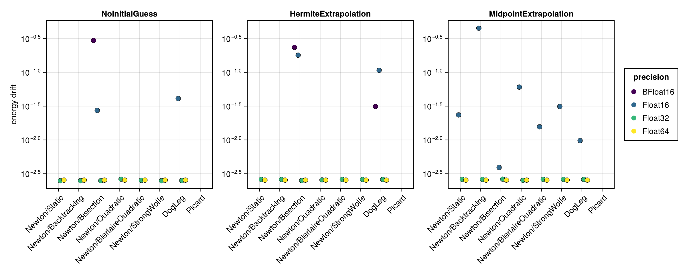

Lotka–Volterra (2d)
The 2d Lotka–Volterra system is a non-canonical Hamiltonian system, benchmarked here in its implicit form via iodeproblem (an implicit ODE / degenerate Lagrangian). Its Hamiltonian $H = a_1 q_1 + a_2 q_2 + b_1 \log q_1 + b_2 \log q_2$ depends on the positions $q$ alone and is used for the energy-drift metric. The system is stiffer than the oscillator and pendulum, so the native time span $(0, 10)$ with $\Delta t = 0.01$ is used; the results are then repeated for a ten times coarser step $\Delta t = 0.1$ (see Coarse time step (Δt = 0.1)).
The benchmark below is regenerated at documentation build time with a single, fast timing pass. See the driver script scripts/midpoint_lotka_volterra_2d.jl for accurate BenchmarkTools measurements.
using SolverBenchmark
spec = lotka_volterra_2d_spec()
df = cached_sweep("lotka_volterra_2d_dt0.01") do
run_benchmark(spec; timing = :quick, verbose = false, quiet = true)
endConvergence
plot_convergence(df; title = "Lotka–Volterra (2d)")
Nonlinear iterations
Mean number of nonlinear-solver iterations per time step (converged runs only):
plot_iterations(df)
Run time
plot_runtime(df)
Energy drift
Drift of the conserved Hamiltonian:
plot_energy_drift(df)
Discussion
- Being an implicit, non-canonical system, the implicit midpoint equations are genuinely nonlinear:
Newton(with a robust line search) andDogLegconverge in about 2 iterations per step atFloat64, and in about 1 atFloat32. Picardnever converges on this system. Its residual $\vartheta(Q) - \bar{p} - \tfrac{h}{2} f$ is not of fixed-point form for the non-canonicaliodeproblemformulation, so the fixed-point iteration has nothing to contract. It is the only solver that fails atFloat64; atFloat32Newton/QuadraticwithMidpointExtrapolationfails too.Float16largely fails (7/24 here, 7/24 at the coarse step): the Newton linear solve hits singular Jacobians and the trajectory diverges, and hereMidpointExtrapolationalso meets theFloat16midpoint-time collision.Float32(20/24) andFloat64(21/24) behave essentially identically — the achievable step accuracy is already reached atFloat32.BFloat16does worse thanFloat16, not better — 1/24 here and 2/24 at the coarse step, against 7/24 and 7/24. This is the comparison the two 16-bit formats were added for, and it identifies the cause: the failures come from near-singular Jacobians, which need significand bits, andBFloat16trades three of them away for exponent range this problem never needs. (At $\Delta t = 0.01$ theBFloat16figure is further depressed by the time-grid collision described under Harmonic Oscillator; the coarse step is the honest comparison.)- The 16-bit counts above are those of
scripts/run_all.jl, whoseBenchmarkToolstiming drives each integrator many times; a later drive can raise, and the row is then recorded as not converged. The single timing pass of the tables on this page keeps five moreNoInitialGuessruns:Float168/24 and 9/24,BFloat162/24 and 3/24. - As always the initial guess matters only for the solvers that iterate more; for the one- to two-iteration Newton/DogLeg runs it has little effect.
Results table
markdown_table(summary_table(df))| precision | solver_label | initial_guess | converged | iterations_mean | runtime_s | max_residual | at_tolerance | energy_drift |
|---|---|---|---|---|---|---|---|---|
| BFloat16 | Newton/Static | NoInitialGuess | ✗ | — | — | — | ✗ | — |
| BFloat16 | Newton/Static | HermiteExtrapolation | ✗ | — | — | — | ✗ | — |
| BFloat16 | Newton/Static | MidpointExtrapolation | ✗ | — | — | — | ✗ | — |
| BFloat16 | Newton/Backtracking | NoInitialGuess | ✓ | 1.55 | 0.0217 | 0.0938 | ✓ | 0.336 |
| BFloat16 | Newton/Backtracking | HermiteExtrapolation | ✗ | — | — | — | ✗ | — |
| BFloat16 | Newton/Backtracking | MidpointExtrapolation | ✗ | — | — | — | ✗ | — |
| BFloat16 | Newton/Bisection | NoInitialGuess | ✗ | 1.13 | 0.0347 | 0.0918 | ✗ | — |
| BFloat16 | Newton/Bisection | HermiteExtrapolation | ✗ | — | — | — | ✗ | — |
| BFloat16 | Newton/Bisection | MidpointExtrapolation | ✗ | — | — | — | ✗ | — |
| BFloat16 | Newton/Quadratic | NoInitialGuess | ✓ | 1 | 0.0383 | 0.0625 | ✓ | 0.336 |
| BFloat16 | Newton/Quadratic | HermiteExtrapolation | ✗ | — | — | — | ✗ | — |
| BFloat16 | Newton/Quadratic | MidpointExtrapolation | ✗ | — | — | — | ✗ | — |
| BFloat16 | Newton/BierlaireQuadratic | NoInitialGuess | ✗ | — | — | — | ✗ | — |
| BFloat16 | Newton/BierlaireQuadratic | HermiteExtrapolation | ✗ | — | — | — | ✗ | — |
| BFloat16 | Newton/BierlaireQuadratic | MidpointExtrapolation | ✗ | — | — | — | ✗ | — |
| BFloat16 | Newton/StrongWolfe | NoInitialGuess | ✓ | 1.01 | 0.024 | 0.0625 | ✓ | 0.359 |
| BFloat16 | Newton/StrongWolfe | HermiteExtrapolation | ✗ | — | — | — | ✗ | — |
| BFloat16 | Newton/StrongWolfe | MidpointExtrapolation | ✗ | — | — | — | ✗ | — |
| BFloat16 | DogLeg | NoInitialGuess | ✗ | 2.46 | 0.0295 | 1.43 | ✗ | — |
| BFloat16 | DogLeg | HermiteExtrapolation | ✗ | — | — | — | ✗ | — |
| BFloat16 | DogLeg | MidpointExtrapolation | ✗ | — | — | — | ✗ | — |
| BFloat16 | Picard | NoInitialGuess | ✗ | — | — | — | ✗ | — |
| BFloat16 | Picard | HermiteExtrapolation | ✗ | — | — | — | ✗ | — |
| BFloat16 | Picard | MidpointExtrapolation | ✗ | — | — | — | ✗ | — |
| Float16 | Newton/Static | NoInitialGuess | ✗ | — | — | — | ✗ | — |
| Float16 | Newton/Static | HermiteExtrapolation | ✗ | — | — | — | ✗ | — |
| Float16 | Newton/Static | MidpointExtrapolation | ✗ | — | — | — | ✗ | — |
| Float16 | Newton/Backtracking | NoInitialGuess | ✗ | — | — | — | ✗ | — |
| Float16 | Newton/Backtracking | HermiteExtrapolation | ✗ | — | — | — | ✗ | — |
| Float16 | Newton/Backtracking | MidpointExtrapolation | ✗ | — | — | — | ✗ | — |
| Float16 | Newton/Bisection | NoInitialGuess | ✓ | 1 | 0.0325 | 0.00771 | ✓ | 0.0312 |
| Float16 | Newton/Bisection | HermiteExtrapolation | ✓ | 1 | 0.0339 | 0.0077 | ✓ | 0.0156 |
| Float16 | Newton/Bisection | MidpointExtrapolation | ✗ | — | — | — | ✗ | — |
| Float16 | Newton/Quadratic | NoInitialGuess | ✗ | 1.01 | 0.0371 | 0.00847 | ✗ | — |
| Float16 | Newton/Quadratic | HermiteExtrapolation | ✓ | 1.07 | 0.0371 | 0.00781 | ✓ | 0.00195 |
| Float16 | Newton/Quadratic | MidpointExtrapolation | ✗ | — | — | — | ✗ | — |
| Float16 | Newton/BierlaireQuadratic | NoInitialGuess | ✗ | — | — | — | ✗ | — |
| Float16 | Newton/BierlaireQuadratic | HermiteExtrapolation | ✗ | — | — | — | ✗ | — |
| Float16 | Newton/BierlaireQuadratic | MidpointExtrapolation | ✗ | — | — | — | ✗ | — |
| Float16 | Newton/StrongWolfe | NoInitialGuess | ✓ | 1.32 | 0.0291 | 0.00781 | ✓ | 0.0254 |
| Float16 | Newton/StrongWolfe | HermiteExtrapolation | ✗ | — | — | — | ✗ | — |
| Float16 | Newton/StrongWolfe | MidpointExtrapolation | ✗ | — | — | — | ✗ | — |
| Float16 | DogLeg | NoInitialGuess | ✗ | 1 | 0.0177 | 0.00939 | ✗ | — |
| Float16 | DogLeg | HermiteExtrapolation | ✓ | 1.01 | 0.019 | 0.00754 | ✓ | 0.0488 |
| Float16 | DogLeg | MidpointExtrapolation | ✗ | — | — | — | ✗ | — |
| Float16 | Picard | NoInitialGuess | ✗ | 5.76 | 0.0406 | 0.323 | ✗ | — |
| Float16 | Picard | HermiteExtrapolation | ✗ | 3.71 | 0.0371 | 0.0873 | ✗ | — |
| Float16 | Picard | MidpointExtrapolation | ✗ | — | — | — | ✗ | — |
| Float32 | Newton/Static | NoInitialGuess | ✓ | 1.01 | 0.0168 | 9.44e-07 | ✓ | 0.000149 |
| Float32 | Newton/Static | HermiteExtrapolation | ✓ | 1 | 0.0173 | 9.39e-07 | ✓ | 1.91e-06 |
| Float32 | Newton/Static | MidpointExtrapolation | ✓ | 1 | 0.096 | 9.18e-07 | ✓ | 3.05e-05 |
| Float32 | Newton/Backtracking | NoInitialGuess | ✓ | 1.01 | 0.021 | 9.44e-07 | ✓ | 0.000149 |
| Float32 | Newton/Backtracking | HermiteExtrapolation | ✓ | 1 | 0.0215 | 9.35e-07 | ✓ | 9.78e-06 |
| Float32 | Newton/Backtracking | MidpointExtrapolation | ✓ | 1 | 0.1 | 9.39e-07 | ✓ | 0.000116 |
| Float32 | Newton/Bisection | NoInitialGuess | ✓ | 2.03 | 0.0575 | 8.92e-07 | ✓ | 3.7e-05 |
| Float32 | Newton/Bisection | HermiteExtrapolation | ✓ | 1.08 | 0.0348 | 9.51e-07 | ✓ | 3.89e-05 |
| Float32 | Newton/Bisection | MidpointExtrapolation | ✓ | 1.12 | 0.114 | 9.49e-07 | ✓ | 3.39e-05 |
| Float32 | Newton/Quadratic | NoInitialGuess | ✓ | 1.81 | 0.055 | 9.52e-07 | ✓ | 0.000747 |
| Float32 | Newton/Quadratic | HermiteExtrapolation | ✓ | 1.01 | 0.0362 | 9.26e-07 | ✓ | 3.24e-05 |
| Float32 | Newton/Quadratic | MidpointExtrapolation | ✗ | 1.02 | 0.115 | 1.21e-06 | ✗ | — |
| Float32 | Newton/BierlaireQuadratic | NoInitialGuess | ✓ | 1.01 | 0.022 | 9.44e-07 | ✓ | 0.000149 |
| Float32 | Newton/BierlaireQuadratic | HermiteExtrapolation | ✓ | 1 | 0.023 | 9.39e-07 | ✓ | 1.91e-06 |
| Float32 | Newton/BierlaireQuadratic | MidpointExtrapolation | ✓ | 1 | 0.102 | 9.18e-07 | ✓ | 3.05e-05 |
| Float32 | Newton/StrongWolfe | NoInitialGuess | ✓ | 1.01 | 0.0231 | 9.44e-07 | ✓ | 0.000149 |
| Float32 | Newton/StrongWolfe | HermiteExtrapolation | ✓ | 1 | 0.0268 | 8.96e-07 | ✓ | 2.98e-05 |
| Float32 | Newton/StrongWolfe | MidpointExtrapolation | ✓ | 1 | 0.107 | 9.39e-07 | ✓ | 0.000116 |
| Float32 | DogLeg | NoInitialGuess | ✓ | 1.01 | 0.0174 | 8.48e-07 | ✓ | 0.000203 |
| Float32 | DogLeg | HermiteExtrapolation | ✓ | 1 | 0.0185 | 9.35e-07 | ✓ | 9.78e-06 |
| Float32 | DogLeg | MidpointExtrapolation | ✓ | 1 | 0.0981 | 9.38e-07 | ✓ | 5.87e-05 |
| Float32 | Picard | NoInitialGuess | ✗ | 9.84 | 0.251 | 0.957 | ✗ | — |
| Float32 | Picard | HermiteExtrapolation | ✗ | 5.25 | 0.0659 | 0.000483 | ✗ | — |
| Float32 | Picard | MidpointExtrapolation | ✗ | 5.66 | 0.15 | 0.00052 | ✗ | — |
| Float64 | Newton/Static | NoInitialGuess | ✓ | 2.18 | 0.0229 | 1.78e-15 | ✓ | 2.48e-05 |
| Float64 | Newton/Static | HermiteExtrapolation | ✓ | 2 | 0.0227 | 1.64e-15 | ✓ | 2.48e-05 |
| Float64 | Newton/Static | MidpointExtrapolation | ✓ | 2 | 0.103 | 1.73e-15 | ✓ | 2.48e-05 |
| Float64 | Newton/Backtracking | NoInitialGuess | ✓ | 2.18 | 0.0313 | 1.78e-15 | ✓ | 2.48e-05 |
| Float64 | Newton/Backtracking | HermiteExtrapolation | ✓ | 2 | 0.0307 | 1.64e-15 | ✓ | 2.48e-05 |
| Float64 | Newton/Backtracking | MidpointExtrapolation | ✓ | 2 | 0.11 | 1.64e-15 | ✓ | 2.48e-05 |
| Float64 | Newton/Bisection | NoInitialGuess | ✓ | 3.06 | 0.128 | 1.77e-15 | ✓ | 2.48e-05 |
| Float64 | Newton/Bisection | HermiteExtrapolation | ✓ | 3.08 | 0.115 | 1.56e-15 | ✓ | 2.48e-05 |
| Float64 | Newton/Bisection | MidpointExtrapolation | ✓ | 3.17 | 0.197 | 1.61e-15 | ✓ | 2.48e-05 |
| Float64 | Newton/Quadratic | NoInitialGuess | ✓ | 3.18 | 0.183 | 1.77e-15 | ✓ | 2.48e-05 |
| Float64 | Newton/Quadratic | HermiteExtrapolation | ✓ | 2.63 | 0.155 | 1.77e-15 | ✓ | 2.48e-05 |
| Float64 | Newton/Quadratic | MidpointExtrapolation | ✓ | 2.64 | 0.235 | 1.77e-15 | ✓ | 2.48e-05 |
| Float64 | Newton/BierlaireQuadratic | NoInitialGuess | ✓ | 2.25 | 0.0687 | 1.76e-15 | ✓ | 2.48e-05 |
| Float64 | Newton/BierlaireQuadratic | HermiteExtrapolation | ✓ | 2.01 | 0.0651 | 1.76e-15 | ✓ | 2.48e-05 |
| Float64 | Newton/BierlaireQuadratic | MidpointExtrapolation | ✓ | 2 | 0.147 | 1.69e-15 | ✓ | 2.48e-05 |
| Float64 | Newton/StrongWolfe | NoInitialGuess | ✓ | 2.18 | 0.0373 | 1.78e-15 | ✓ | 2.48e-05 |
| Float64 | Newton/StrongWolfe | HermiteExtrapolation | ✓ | 2 | 0.0356 | 1.64e-15 | ✓ | 2.48e-05 |
| Float64 | Newton/StrongWolfe | MidpointExtrapolation | ✓ | 2 | 0.116 | 1.64e-15 | ✓ | 2.48e-05 |
| Float64 | DogLeg | NoInitialGuess | ✓ | 2.19 | 0.0237 | 1.73e-15 | ✓ | 2.48e-05 |
| Float64 | DogLeg | HermiteExtrapolation | ✓ | 2 | 0.0238 | 1.64e-15 | ✓ | 2.48e-05 |
| Float64 | DogLeg | MidpointExtrapolation | ✓ | 2 | 0.104 | 1.64e-15 | ✓ | 2.48e-05 |
| Float64 | Picard | NoInitialGuess | ✗ | — | — | — | ✗ | — |
| Float64 | Picard | HermiteExtrapolation | ✗ | 12.7 | 0.233 | 0.000336 | ✗ | — |
| Float64 | Picard | MidpointExtrapolation | ✗ | 13.4 | 0.324 | 0.000291 | ✗ | — |
Coarse time step (Δt = 0.1)
The same benchmark over $(0, 10)$ with a ten times larger step. The problem becomes harder: the converging solvers need more iterations (≈ 3 per step instead of ≈ 2), while the same configurations continue to fail (Picard, and much of Float16).
spec1 = lotka_volterra_2d_spec(timespan = (0.0, 10.0), timestep = 0.1)
df1 = cached_sweep("lotka_volterra_2d_dt0.1") do
run_benchmark(spec1; timing = :quick, verbose = false, quiet = true)
endConvergence
plot_convergence(df1; title = "Lotka–Volterra (2d, Δt = 0.1)")
Nonlinear iterations
plot_iterations(df1)
Run time
plot_runtime(df1)
Energy drift
plot_energy_drift(df1)
Results table
markdown_table(summary_table(df1))| precision | solver_label | initial_guess | converged | iterations_mean | runtime_s | max_residual | at_tolerance | energy_drift |
|---|---|---|---|---|---|---|---|---|
| BFloat16 | Newton/Static | NoInitialGuess | ✗ | — | — | — | ✗ | — |
| BFloat16 | Newton/Static | HermiteExtrapolation | ✗ | — | — | — | ✗ | — |
| BFloat16 | Newton/Static | MidpointExtrapolation | ✗ | — | — | — | ✗ | — |
| BFloat16 | Newton/Backtracking | NoInitialGuess | ✗ | — | — | — | ✗ | — |
| BFloat16 | Newton/Backtracking | HermiteExtrapolation | ✗ | — | — | — | ✗ | — |
| BFloat16 | Newton/Backtracking | MidpointExtrapolation | ✗ | — | — | — | ✗ | — |
| BFloat16 | Newton/Bisection | NoInitialGuess | ✓ | 1.03 | 0.00375 | 0.0439 | ✓ | 0.297 |
| BFloat16 | Newton/Bisection | HermiteExtrapolation | ✓ | 1.05 | 0.00393 | 0.0615 | ✓ | 0.234 |
| BFloat16 | Newton/Bisection | MidpointExtrapolation | ✗ | — | — | — | ✗ | — |
| BFloat16 | Newton/Quadratic | NoInitialGuess | ✗ | — | — | — | ✗ | — |
| BFloat16 | Newton/Quadratic | HermiteExtrapolation | ✗ | — | — | — | ✗ | — |
| BFloat16 | Newton/Quadratic | MidpointExtrapolation | ✗ | — | — | — | ✗ | — |
| BFloat16 | Newton/BierlaireQuadratic | NoInitialGuess | ✗ | — | — | — | ✗ | — |
| BFloat16 | Newton/BierlaireQuadratic | HermiteExtrapolation | ✗ | — | — | — | ✗ | — |
| BFloat16 | Newton/BierlaireQuadratic | MidpointExtrapolation | ✗ | — | — | — | ✗ | — |
| BFloat16 | Newton/StrongWolfe | NoInitialGuess | ✗ | — | — | — | ✗ | — |
| BFloat16 | Newton/StrongWolfe | HermiteExtrapolation | ✗ | — | — | — | ✗ | — |
| BFloat16 | Newton/StrongWolfe | MidpointExtrapolation | ✗ | — | — | — | ✗ | — |
| BFloat16 | DogLeg | NoInitialGuess | ✗ | 1.44 | 0.0024 | 0.297 | ✗ | — |
| BFloat16 | DogLeg | HermiteExtrapolation | ✓ | 1 | 0.00226 | 0.0547 | ✓ | 0.0312 |
| BFloat16 | DogLeg | MidpointExtrapolation | ✗ | — | — | — | ✗ | — |
| BFloat16 | Picard | NoInitialGuess | ✗ | — | — | — | ✗ | — |
| BFloat16 | Picard | HermiteExtrapolation | ✗ | — | — | — | ✗ | — |
| BFloat16 | Picard | MidpointExtrapolation | ✗ | — | — | — | ✗ | — |
| Float16 | Newton/Static | NoInitialGuess | ✗ | — | — | — | ✗ | — |
| Float16 | Newton/Static | HermiteExtrapolation | ✗ | — | — | — | ✗ | — |
| Float16 | Newton/Static | MidpointExtrapolation | ✓ | 1.42 | 0.0102 | 0.00781 | ✓ | 0.0234 |
| Float16 | Newton/Backtracking | NoInitialGuess | ✗ | — | — | — | ✗ | — |
| Float16 | Newton/Backtracking | HermiteExtrapolation | ✗ | — | — | — | ✗ | — |
| Float16 | Newton/Backtracking | MidpointExtrapolation | ✓ | 2.08 | 0.0112 | 0.00781 | ✓ | 0.451 |
| Float16 | Newton/Bisection | NoInitialGuess | ✓ | 1.18 | 0.00387 | 0.00776 | ✓ | 0.0273 |
| Float16 | Newton/Bisection | HermiteExtrapolation | ✓ | 1.13 | 0.00415 | 0.00757 | ✓ | 0.18 |
| Float16 | Newton/Bisection | MidpointExtrapolation | ✓ | 1 | 0.0116 | 0.0071 | ✓ | 0.00391 |
| Float16 | Newton/Quadratic | NoInitialGuess | ✗ | — | — | — | ✗ | — |
| Float16 | Newton/Quadratic | HermiteExtrapolation | ✗ | — | — | — | ✗ | — |
| Float16 | Newton/Quadratic | MidpointExtrapolation | ✓ | 1.23 | 0.0125 | 0.00758 | ✓ | 0.0605 |
| Float16 | Newton/BierlaireQuadratic | NoInitialGuess | ✗ | — | — | — | ✗ | — |
| Float16 | Newton/BierlaireQuadratic | HermiteExtrapolation | ✗ | — | — | — | ✗ | — |
| Float16 | Newton/BierlaireQuadratic | MidpointExtrapolation | ✓ | 1.12 | 0.0108 | 0.00771 | ✓ | 0.0156 |
| Float16 | Newton/StrongWolfe | NoInitialGuess | ✗ | — | — | — | ✗ | — |
| Float16 | Newton/StrongWolfe | HermiteExtrapolation | ✗ | — | — | — | ✗ | — |
| Float16 | Newton/StrongWolfe | MidpointExtrapolation | ✓ | 1 | 0.0106 | 0.00671 | ✓ | 0.0312 |
| Float16 | DogLeg | NoInitialGuess | ✓ | 2.06 | 0.00362 | 0.00732 | ✓ | 0.041 |
| Float16 | DogLeg | HermiteExtrapolation | ✓ | 2.11 | 0.0027 | 0.00713 | ✓ | 0.107 |
| Float16 | DogLeg | MidpointExtrapolation | ✓ | 1 | 0.00998 | 0.00737 | ✓ | 0.00977 |
| Float16 | Picard | NoInitialGuess | ✗ | — | — | — | ✗ | — |
| Float16 | Picard | HermiteExtrapolation | ✗ | 3.21 | 0.00408 | 0.128 | ✗ | — |
| Float16 | Picard | MidpointExtrapolation | ✗ | 2.91 | 0.0115 | 0.044 | ✗ | — |
| Float32 | Newton/Static | NoInitialGuess | ✓ | 2.12 | 0.00252 | 8.87e-07 | ✓ | 0.00249 |
| Float32 | Newton/Static | HermiteExtrapolation | ✓ | 1.86 | 0.00268 | 8.75e-07 | ✓ | 0.0026 |
| Float32 | Newton/Static | MidpointExtrapolation | ✓ | 1.85 | 0.0104 | 9.52e-07 | ✓ | 0.0026 |
| Float32 | Newton/Backtracking | NoInitialGuess | ✓ | 2.12 | 0.00333 | 8.87e-07 | ✓ | 0.00249 |
| Float32 | Newton/Backtracking | HermiteExtrapolation | ✓ | 1.86 | 0.00319 | 8.75e-07 | ✓ | 0.0026 |
| Float32 | Newton/Backtracking | MidpointExtrapolation | ✓ | 1.85 | 0.0111 | 9.52e-07 | ✓ | 0.0026 |
| Float32 | Newton/Bisection | NoInitialGuess | ✓ | 2.99 | 0.00882 | 9.19e-07 | ✓ | 0.00249 |
| Float32 | Newton/Bisection | HermiteExtrapolation | ✓ | 2.91 | 0.00801 | 9.41e-07 | ✓ | 0.00251 |
| Float32 | Newton/Bisection | MidpointExtrapolation | ✓ | 2.68 | 0.0155 | 9.48e-07 | ✓ | 0.00263 |
| Float32 | Newton/Quadratic | NoInitialGuess | ✓ | 2.33 | 0.00779 | 9.14e-07 | ✓ | 0.00262 |
| Float32 | Newton/Quadratic | HermiteExtrapolation | ✓ | 1.97 | 0.00637 | 8.01e-07 | ✓ | 0.00256 |
| Float32 | Newton/Quadratic | MidpointExtrapolation | ✓ | 1.96 | 0.0144 | 7.9e-07 | ✓ | 0.00253 |
| Float32 | Newton/BierlaireQuadratic | NoInitialGuess | ✓ | 2.21 | 0.00646 | 9.37e-07 | ✓ | 0.00252 |
| Float32 | Newton/BierlaireQuadratic | HermiteExtrapolation | ✓ | 1.86 | 0.00375 | 8.75e-07 | ✓ | 0.0026 |
| Float32 | Newton/BierlaireQuadratic | MidpointExtrapolation | ✓ | 1.85 | 0.0117 | 9.52e-07 | ✓ | 0.0026 |
| Float32 | Newton/StrongWolfe | NoInitialGuess | ✓ | 2.12 | 0.00417 | 8.87e-07 | ✓ | 0.00249 |
| Float32 | Newton/StrongWolfe | HermiteExtrapolation | ✓ | 1.86 | 0.00395 | 8.75e-07 | ✓ | 0.0026 |
| Float32 | Newton/StrongWolfe | MidpointExtrapolation | ✓ | 1.85 | 0.012 | 9.52e-07 | ✓ | 0.0026 |
| Float32 | DogLeg | NoInitialGuess | ✓ | 2.17 | 0.00296 | 8.35e-07 | ✓ | 0.0025 |
| Float32 | DogLeg | HermiteExtrapolation | ✓ | 1.86 | 0.00292 | 8.75e-07 | ✓ | 0.0026 |
| Float32 | DogLeg | MidpointExtrapolation | ✓ | 1.85 | 0.0108 | 9.52e-07 | ✓ | 0.0026 |
| Float32 | Picard | NoInitialGuess | ✗ | — | — | — | ✗ | — |
| Float32 | Picard | HermiteExtrapolation | ✗ | 6.88 | 0.0123 | 0.136 | ✗ | — |
| Float32 | Picard | MidpointExtrapolation | ✗ | 6.17 | 0.0183 | 0.0494 | ✗ | — |
| Float64 | Newton/Static | NoInitialGuess | ✓ | 3.32 | 0.00345 | 1.71e-15 | ✓ | 0.00254 |
| Float64 | Newton/Static | HermiteExtrapolation | ✓ | 3 | 0.00361 | 1.55e-15 | ✓ | 0.00254 |
| Float64 | Newton/Static | MidpointExtrapolation | ✓ | 3.05 | 0.0115 | 1.69e-15 | ✓ | 0.00254 |
| Float64 | Newton/Backtracking | NoInitialGuess | ✓ | 3.32 | 0.00479 | 1.71e-15 | ✓ | 0.00254 |
| Float64 | Newton/Backtracking | HermiteExtrapolation | ✓ | 3 | 0.00463 | 1.55e-15 | ✓ | 0.00254 |
| Float64 | Newton/Backtracking | MidpointExtrapolation | ✓ | 3.01 | 0.0127 | 1.69e-15 | ✓ | 0.00254 |
| Float64 | Newton/Bisection | NoInitialGuess | ✓ | 4.18 | 0.0244 | 1.24e-15 | ✓ | 0.00254 |
| Float64 | Newton/Bisection | HermiteExtrapolation | ✓ | 3.94 | 0.0176 | 1.73e-15 | ✓ | 0.00254 |
| Float64 | Newton/Bisection | MidpointExtrapolation | ✓ | 3.89 | 0.0255 | 1.53e-15 | ✓ | 0.00254 |
| Float64 | Newton/Quadratic | NoInitialGuess | ✓ | 4.21 | 0.0343 | 1.33e-15 | ✓ | 0.00254 |
| Float64 | Newton/Quadratic | HermiteExtrapolation | ✓ | 3.87 | 0.026 | 1.69e-15 | ✓ | 0.00254 |
| Float64 | Newton/Quadratic | MidpointExtrapolation | ✓ | 3.74 | 0.0332 | 1.75e-15 | ✓ | 0.00254 |
| Float64 | Newton/BierlaireQuadratic | NoInitialGuess | ✓ | 3.29 | 0.0145 | 1.49e-15 | ✓ | 0.00254 |
| Float64 | Newton/BierlaireQuadratic | HermiteExtrapolation | ✓ | 2.94 | 0.0106 | 1.75e-15 | ✓ | 0.00254 |
| Float64 | Newton/BierlaireQuadratic | MidpointExtrapolation | ✓ | 2.77 | 0.0189 | 1.33e-15 | ✓ | 0.00254 |
| Float64 | Newton/StrongWolfe | NoInitialGuess | ✓ | 3.32 | 0.00572 | 1.71e-15 | ✓ | 0.00254 |
| Float64 | Newton/StrongWolfe | HermiteExtrapolation | ✓ | 3 | 0.00539 | 1.55e-15 | ✓ | 0.00254 |
| Float64 | Newton/StrongWolfe | MidpointExtrapolation | ✓ | 3.01 | 0.0138 | 1.69e-15 | ✓ | 0.00254 |
| Float64 | DogLeg | NoInitialGuess | ✓ | 3.36 | 0.00374 | 1.38e-15 | ✓ | 0.00254 |
| Float64 | DogLeg | HermiteExtrapolation | ✓ | 3 | 0.00366 | 1.55e-15 | ✓ | 0.00254 |
| Float64 | DogLeg | MidpointExtrapolation | ✓ | 3.01 | 0.012 | 1.69e-15 | ✓ | 0.00254 |
| Float64 | Picard | NoInitialGuess | ✗ | — | — | — | ✗ | — |
| Float64 | Picard | HermiteExtrapolation | ✗ | 8.29 | 0.0274 | 0.136 | ✗ | — |
| Float64 | Picard | MidpointExtrapolation | ✗ | 8.6 | 0.0342 | 0.0492 | ✗ | — |